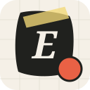
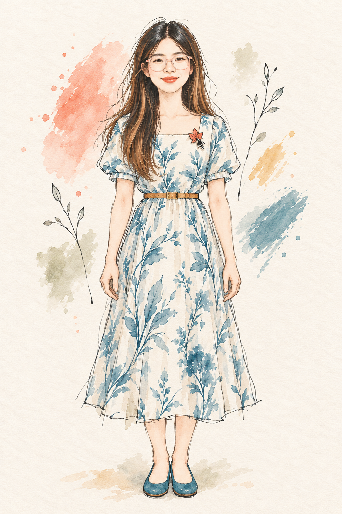

ellen-design-system
Ellen Design System
Apply Ellen's recognizable editorial field-notes design language—warm paper, visible grids, restrained blue/coral/green/yellow accents, watercolor personal-IP imagery, and tactile scrapbook collage—to websites, slides, documents, posters, social graphics, and product mockups.
Field notes with product rigor
Recreate a consistent personal-brand system rather than copying one page layout. The signature is field notes with product rigor: editorial typography and evidence-led information architecture softened by handmade paper, tape, stamps, handwritten annotations, watercolor portraiture, and slight imperfection.
WEBSITESLIDESDOCUMENTSPRODUCT MOCKUPS
VISUAL PREVIEW · ASSETS INCLUDED IN SKILLField notes with

Field notes with
product rigor.
Warm ivory paper, charcoal ink, faint drafting grid, and soft imperfect geometry.
